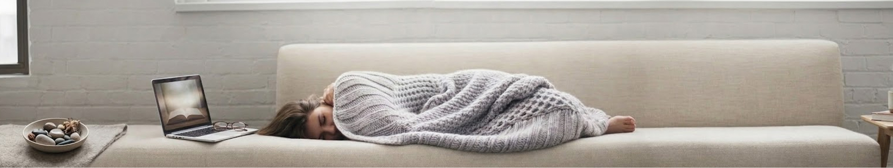
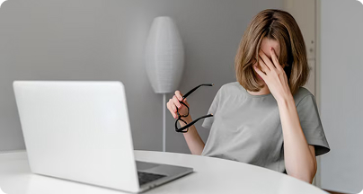

Бывало ли с вами такое, что после завершения рабочего дня вы продолжали заниматься рабочими задачками? А как часто в такие моменты вы ловили себя на мысли, что отдых нужно заслужить и вы его просто так не достойны? Если ваш ответ — «часто» и такие ситуации для вас уже рутина, то в этой статье мы расскажем, как построить здоровые отношения с отдыхом и научиться расслабляться.
Мы живём в эпоху культа достигаторства, когда ценится высокая продуктивность. Кажется, что каждую минуту нужно быть эффективным — и ни в коем случае нельзя позволять себе просто расслабиться. При этом мы постоянно видим в соцсетях истории «успешного успеха»: как кто‑то заработал первый миллион, как сосед купил машину, в то время как многие банально не успевают увидеться с близкими после рабочего дня.
Вследствие этого многие начинают испытывать стыд, если выбирают просто отдохнуть — даже если сделали свой максимум. Внутри появляется ощущение бесконечной гонки и страх, что кто‑то станет успешнее. Такие токсичные установки ведут к постоянной тревоге, недовольству собой и в итоге — к эмоциональному выгоранию и стрессу.

Помимо хронической усталости, постоянное игнорирование отдыха и базовых потребностей может привести и к другим последствиям:
Также дефицит отдыха может привести к эмоциональному выгоранию. В таком состоянии человек буквально начинает жить «на автопилоте». Это напрямую влияет на уровень продуктивности и креативности. Мозг, лишенный времени на восстановление, переходит в режим энергосбережения: он снижает способность генерировать новые идеи, чтобы направить ресурсы на базовое функционирование. Проще говоря — выживание вместо жизни.
Важно понять, что отдых — это не лень, а необходимая перезагрузка для вашего тела и психики. Без отдыха 24/7 работают только роботы — и даже они в какой-то момент ломаются. В ваших силах относиться к себе бережнее, а не выжимать из себя последние ресурсы. Попробуйте проработать внутренние установки, из-за которых вы чувствуете вину за отдых. Напоминайте себе: работа никуда не убежит, а забота о себе — не пустая трата времени, а необходимость.
Если вы чувствуете, что соцсети делают вашу жизнь хуже — сократите скроллинг. Важно понимать, что соцсети — это по сути красивый фасад. Вы не знаете, как люди живут на самом деле, что у них за кадром. Поэтому вместо бесконечных рилсов и просмотров профилей знакомых попробуйте больше сфокусироваться на себе и своей жизни.
Полноценный отдых — это не просто отказ от работы, а время, которое вы посвящаете себе и своим интересам. Качественный отдых помогает «перезагрузить» мысли.
Если вам сложно ничего не делать — это нормально. В таком случае можно выбрать активный отдых: прогулки, спорт или хобби, где задействованы руки и внимание.
Например, можно попробовать необычные мастер-классы или новые занятия. Это помогает обмануть внутренние установки: вы вроде бы заняты делом, но при этом действительно отдыхаете и узнаете что-то новое. Например, в нашем каталоге хобби вы можете найти занятия на любой вкус — от спокойных и медитативных до активных и креативных.
И да, никто не отменял самый проверенный вариант — просто поспать. Сон — это базовый, но очень мощный способ восстановления, который помогает вернуть энергию и внутреннее равновесие.
Отдых — это не то, что нужно заслуживать. Если вы устали — значит, вам уже нужен отдых, а не ещё один рывок. И, возможно, лучшее, что вы можете сейчас сделать — просто остановиться и дать себе немного времени без чувства вины.